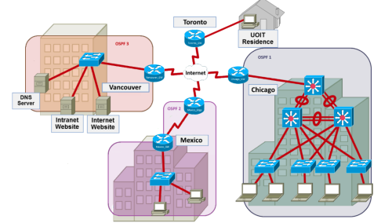
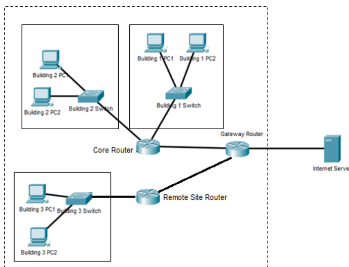

The above image is the topology of my case study project in my Introduction to Networking Two.
In the project, my group was tasked to develop a pilot network capable of being integrated
such that all branches will be connected through a dedicated WAN connection using
BGP and can be managed completely remotely from the Ontario Tech Residence.
This project served as a great challenge that tested the skills we had learned in the lectures and practiced during our labs.

The above image is the topology of my case study project in my first Introduction to Networking course.
The following diagram shows the topology of a corporate network consisting of three buildings that my partner and I had to set up.
Each building contains a number of PCs and a switched LAN.
Two buildings are connected to a core router, which is connected to a Gateway router.
A remote site (Building 3) is connected to a remote site router that is connected separately to the Gateway router.
The Gateway router has a single connection to an Internet server with IP address 108.0.0.1.
The link between the Gateway router and the Internet server uses the subnet 108.0.0.0/30.
This project served as a great first-time experience with a network that was bigger than what we dealt with in our labs.